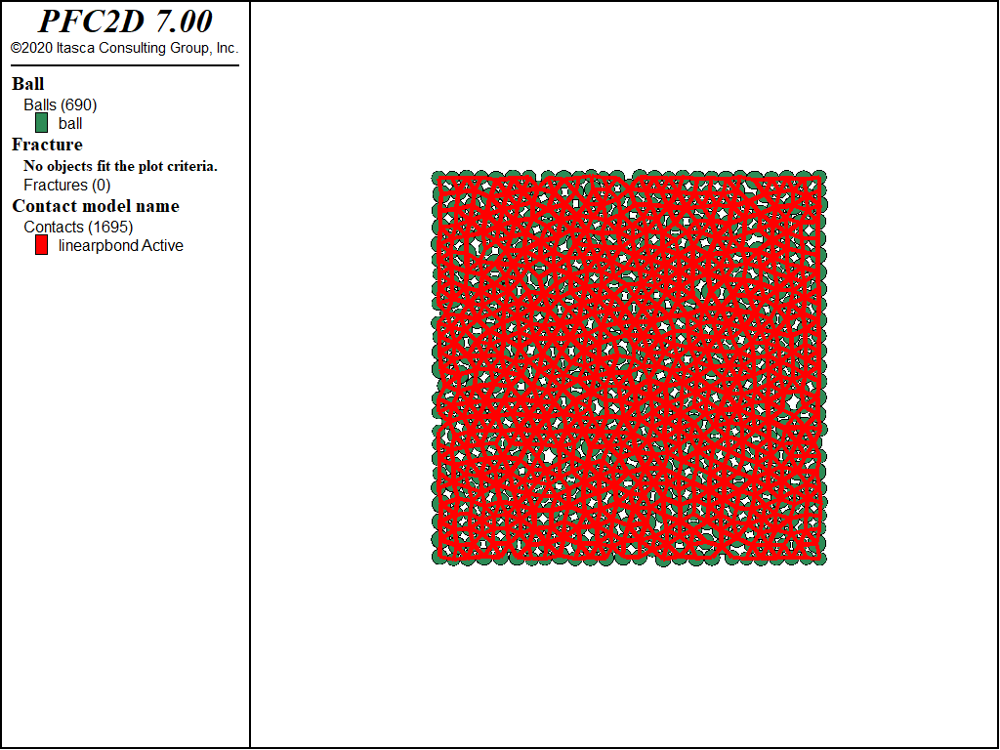
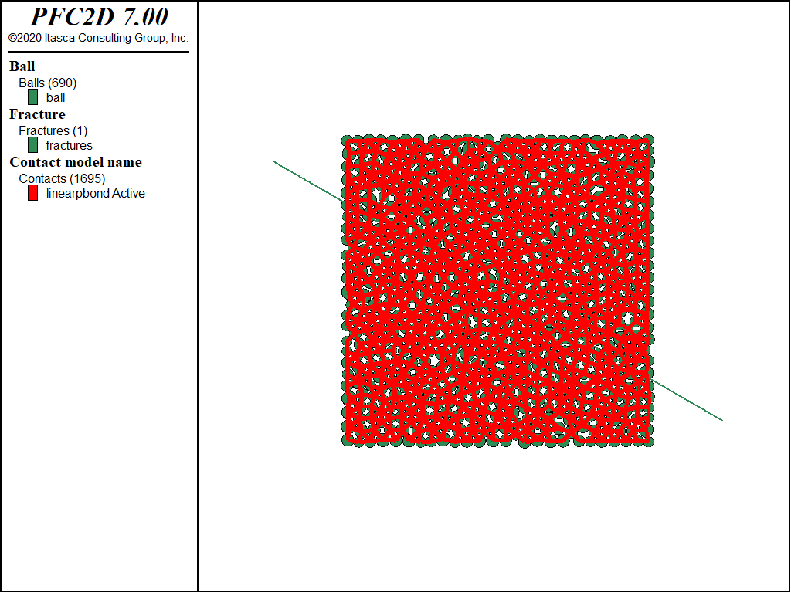
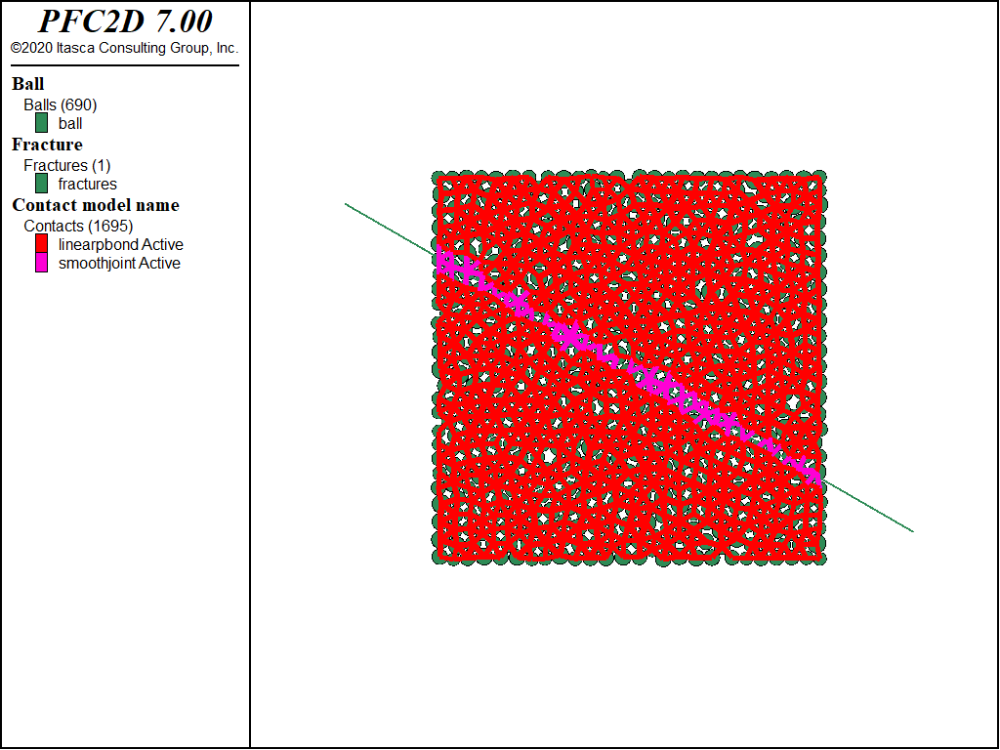
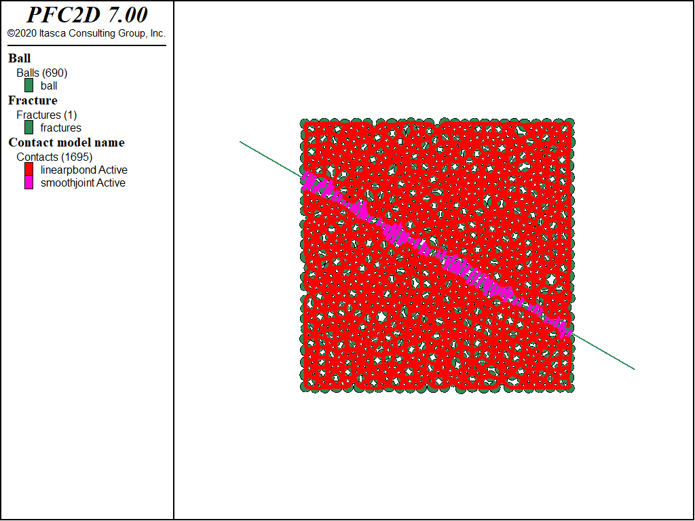
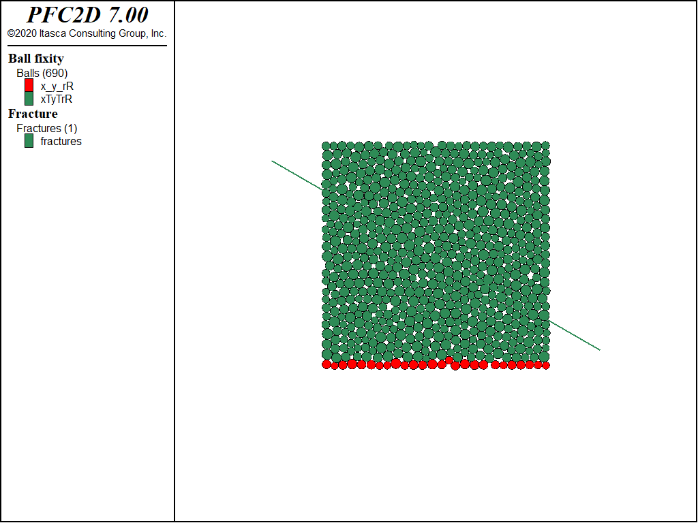
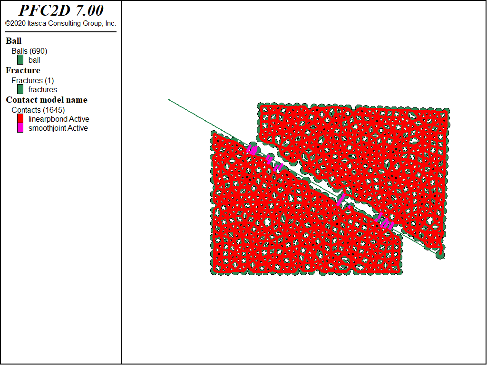
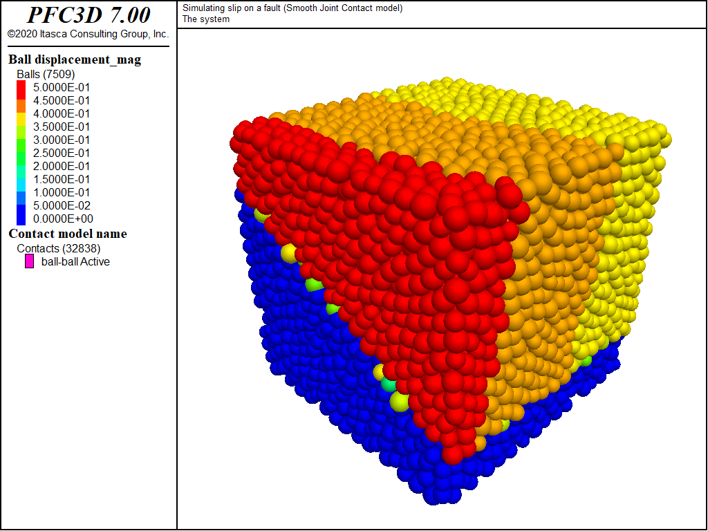

断层滑移
引言
注意
本算例的项目文件可在 PFC 中查看或运行。[1]所用的数据文件（data files）列于本算例末尾。
本教程演示如何模拟单个断层或节理上的滑动。断层可能表现出稳定（锁定）或不稳定（滑动）行为，这取决于作用在断层上的剪应力和法向应力大小以及断层摩擦角。为在 PFC 中检验这一点，使用 线性平行黏结（linear parallel bond） 模型创建黏结颗粒模型，并通过为选定接触赋予 光滑节理（smooth joint） 模型来添加一条节理。模型承受重力加载，并考察节理在不同节理摩擦角下的滑动行为。
PFC2D 模型
黏结颗粒集合体
按照教程“生成黏结颗粒集合体（Generating a Bonded Assembly）”中的相同步骤构建 6×6 m 的试样。此处未详述的命令位于数据文件“make_intact.dat（二维）（make_intact.dat (2D)）”中。
完整材料模型如 图 1（Figure 1） 所示。该图通过绘制球颗粒并按 着色生成（当前均为 0）。同时绘制接触并按 着色（当前全部为线性平行黏结）。


图 1：完整材料模型。
添加断层
向模型中添加断层的命令位于“make_fault.dat (2D)”中。首先恢复完整模型。添加断层最简便的方法是先创建一个离散裂隙网络（DFN）。在本例中，所创建的 DFN 仅包含单条裂隙。该裂隙的倾角为 30 度、直径为 20 m，以确保其贯穿整个模型。这可通过一条命令完成：
fracture create dip 30 size 20.0
默认情况下，裂隙的形状为一条线（三维中为圆盘），中心坐标默认为 0.0。可将 DFN 添加到绘图中查看，如 图 2（Figure 2） 所示。在该图中，为便于观察已将 DFN 的颜色改为黑色。该项可在 DFN 绘图属性的“颜色选项 – 颜色 – 面片”下找到。


图 2：含 DFN 的模型。
光滑节理接触的属性可通过先为 DFN 赋予属性来设置。为 DFN 赋予的任何属性都将自动赋予使用 裂隙接触模型模型（fracture contact-model model） 命令创建的接触（见下文）。断层的属性如下列命令所示：
fracture property 'sj_kn' 2e9 'sj_ks' 2e9 'sj_fric' 0.70 ...
'sj_coh' 0.0 'sj_ten' 0.0 'sj_large' 1
摩擦角设为 35°。由于该值大于断层的倾角，可以预期断层上不会发生滑动。请注意，作为输入，PFC 要求的是无量纲摩擦系数 \(\mu\)（摩擦角的正切），而不是以度表示的摩擦角。将 sj_large 参数设为 1，可确保在预期出现大应变时节理接触能正常发挥作用。本质上，如果两个光滑节理接触彼此分离得足够远，则该接触会被删除。设置 sj_large=1 会增加少量计算开销，因为需要检查接触是否已彼此分离。随后，光滑节理接触模型被分配给与 DFN 相交的所有接触（本例中为单条裂隙）。若一个颗粒的形心位于裂隙的一侧，而另一个颗粒的形心位于对侧，则该接触与裂隙相交。可以使用 ‘distance’ 关键字指定更宽的断层带。为 distance 设置非零值，将拾取断层指定距离范围内的额外接触。在本示例中，我们指定的距离为 0.1。沿节理创建光滑接触的命令如下所示：
fracture contact-model model 'smoothjoint' install dist 0.1 activate
现在您的绘图应以不同颜色显示光滑节理接触与平行黏结接触（图 3（Figure 3））。


图 3：含断层的材料。
光滑节理接触的方位通常不同于由两个相连颗粒决定的默认方位。一般而言，光滑节理接触的方位被设为平行于某个断层面，以便沿该平面发生滑动时不会出现接触未重新定向时那种“凹凸不平”的现象（更多信息请参阅链接）。光滑节理接触的方位会自动设为与 DFN 中裂隙的方位相同。在接触绘图项的属性下，勾选 复选框。这样将以光滑节理接触的“真实”方位渲染它们（图 4（Figure 4））。请注意，在 2D 中，接触显示为平行于法向力方向（垂直于断层）的线段。在 3D 中，接触可渲染为平行于剪切方向（平行于断层）的圆盘，如 图 7（Figure 7） 所示。


图 4：添加断层后模型的接触、球颗粒与 DFN。
看起来接下来的几行以及其后的摘录已不再需要——也许这是命令变更的遗留物？
最后，我们希望节理滑动过程中形成的新接触也能分配光滑节理接触模型。这可通过启用 DFN 接触模型分配来实现：
;=========================================================================
重力加载
本阶段的完整数据文件为“load.dat (2D)”。重力加载的实现方式是：首先固定模型底部的一排颗粒。随后开启重力，并赋予 10 m/s2 的加速度。在 2D 中，重力加速度的默认方向为 y 负方向。
; 固定底部的一排球
ball fix vel range position-y -6 -5.5
; 开启重力
model gravity 10
如果将球颗粒的 属性改为 ，即可看到底部的固定颗粒（图 5（Figure 5））。


图 5：按固定状态着色的球颗粒。
由于我们预期模型是稳定的，因此可以直接使用 solve 命令使其达到平衡。
model solve ratio-average 1e-5
颗粒向下位移，其量值如 图 6（Figure 6） 所示。

现在尝试将断层摩擦角设为 25°（\(\mu\) = 0.466）。以下命令将改变 DFN 范围内所有现有及后续生成的光滑节理接触的摩擦。
fracture property 'sj_fric' 0.466
由于我们预期会出现较大运动，最好降低局部阻尼以获得更真实的行为：
ball attribute damp 0.1
由于我们预期模型会不稳定地滑动，因此不能使用 solve 命令。我们将改为执行 20,000 个循环：
; 不要使用 solve 命令，因为预计会发生不稳定滑动
model cycle 20000
球颗粒位移图现在清楚地显示了沿断层的滑动（图 7（Figure 7））。


图 7：断层摩擦角为 25° 的模型经 20,000 步后的颗粒位移。
PFC3D 模型
3D 模型基本相同，只是球颗粒尺寸略大。数据文件为 “make_intact.dat (3D)”、“make_fault.dat (3D)”和 “load.dat (3D)”。3D 模型的最终状态如 图 8（Figure 8） 所示。


图 8：摩擦角为 25° 时沿断层滑动后的 3D 模型。
讨论
本示例展示了如何通过将光滑节理接触模型分配给与圆形裂隙相交的接触，来模拟单一断层上的滑动。这里展示的技术也可用于模拟含有大量相交断层的岩石试样；不过，在那种情况下需要高得多的分辨率。使用 裂隙接触模型模型（fracture contact-model model） 命令，相交的接触会被自动识别，并被赋予正确的方位和属性。如果希望模拟具有不同属性的多个裂隙组，可以创建多个 DFN，并分别赋予不同的属性。
数据文件
make_intact.dat (3D)
; 文件名：make_intact.dat (3D)
;
; 创建平行黏结试样
;=========================================================================
model new
model large-strain on
model title 'Simulating slip on a fault (Smooth Joint Contact model)'
; 设置模型域范围
model domain extent -20 20
; 修改接触模型分配表的默认槽位
; 此处对所有接触仅设置法向刚度
contact cmat default model linearpbond property kn 5e7 dp_nratio 0.5
; 生成墙
wall generate box -6 6
; 在盒子中分布球。
model random 1001
ball distribute porosity 0.2 radius 0.3 0.4 box -6 6
; 设置球属性
ball attribute density 1000.0 damp 0.7
; 使系统平静
model cycle 1000 calm 10
; 求解系统至目标限值 (此处为平均力比)
; 使用密度缩放快速达到平衡
model mechanical timestep scale
model solve ratio-average 1e-3
model mechanical timestep auto
model calm
; 删除墙
wall delete
; 对相接触的颗粒安装平行黏结
; 指定极高的强度以防止破坏
contact method bond gap 0.0
contact property pb_kn 1e8 pb_ks 1e8 pb_ten 1e12 pb_coh 1e12 pb_fa 30.0
; 重置球位移
ball attribute displacement multiply 0.0
; 将线性刚度设为 0.0，并强制重置
; 线性接触力。
contact property kn 0.0 lin_force 0.0 0.0 0.0
ball attribute force-contact multiply 0.0 moment-contact multiply 0.0
model cycle 1
model solve ratio-average 1e-5
model save 'intact'
;=========================================================================
; 文件结束：make_intact.dat (3D)
make_fault.dat (3D)
; 文件名：make_fault.dat (3D)
;
; 恢复完整的黏结颗粒模型
; 生成单条裂隙并安装光滑节理接触
; 模型到被裂隙切穿的接触上
;========================================================================
model restore 'intact'
; 添加倾角为 30 度的单条节理
; 默认中心位置为 0,0
fracture create dip 30 dip-direction 90 size 20.0
; 设置要赋给相交接触的 dfn 参数
; 摩擦角为 35 度
fracture property 'sj_kn' 2e9 'sj_ks' 2e9 'sj_fric' 0.70 ...
'sj_coh' 0.0 'sj_ten' 0.0 'sj_large' 1
; 对裂隙切穿的接触施加光滑节理接触模型
fracture contact-model model 'smoothjoint' install dist 0.1
; 确保与裂隙相交的新接触
; 被设为 sj 接触模型
fracture contact-model model 'smoothjoint' activate
model save 'fault'
;=========================================================================
; 文件结束：make_fault.dat (3D)
load.dat (3D)
; 文件名：load.dat (3D)
;
; 恢复含断层的黏结颗粒模型
; 施加重力荷载并测试不同节理摩擦角
;=========================================================================
model restore 'fault'
; 固定底部的一排球
ball fix vel range position-z -6 -5.3
; 开启重力
model gravity 10
model solve ratio-average 1e-5
model save 'load_fric35'
; 现将摩擦角设为 25 度
fracture property 'sj_fric' 0.466
; 减小阻尼
ball attribute damp 0.1
; 不要使用 solve 命令，因为预计会发生不稳定滑动
model cyc 10000
model save 'load_fric25'
;=========================================================================
; 文件结束：load.dat (3D)
make_intact.dat（二维）
; 文件名：make_intact.dat (2D)
;
; 创建平行黏结试样
;=========================================================================
model new
model large-strain on
model title 'Simulating slip on a fault (Smooth Joint Contact model)'
; 设置模型域范围
model domain extent -20 20
; 修改接触模型分配表的默认槽位
; 此处对所有接触仅设置法向刚度
contact cmat default model linearpbond property kn 5e7 dp_nratio 0.5
; 生成墙
wall generate box -6 6
; 在盒子中分布球。
model random 1001
ball distribute porosity 0.05 radius 0.2 0.3 box -6 6
; 设置球属性
ball attribute density 1000.0 damp 0.7
; 使系统平静
model cycle 1000 calm 10
; 求解系统至目标限值 (此处为平均力比)
; 使用密度缩放快速达到平衡
model mechanical timestep scale
model solve ratio-average 1e-3
model mechanical timestep auto
model calm
; 删除墙
wall delete
; 对相接触的颗粒安装平行黏结
; 指定极高的强度以防止破坏
contact method bond gap 0.0
contact property pb_kn 1e8 pb_ks 1e8 pb_ten 1e12 pb_coh 1e12 pb_fa 30.0
; 重置球位移
ball attribute displacement multiply 0.0
; 将线性刚度设为 0.0，并强制重置
; 线性接触力。
contact property kn 0.0 lin_force 0.0 0.0
ball attribute force-contact multiply 0.0 moment-contact multiply 0.0
model cycle 1
model solve ratio-average 1e-5
model save 'intact'
;=========================================================================
; 文件结束：make_intact.dat (2D)
make_fault.dat (2D)
; 文件名：make_fault.dat (2D)
;
; 恢复完整的黏结颗粒模型
; 生成单条裂隙并安装光滑节理接触
;模型到被裂隙切穿的接触上
;========================================================================
model restore 'intact'
; 添加倾角为 30 度的单条节理
; 默认中心位置为 0,0
; excerpt-nhem-start
fracture create dip 30 size 20.0
; excerpt-nhem-end
; 设置要赋给相交接触的 dfn 参数
; 摩擦角为 35 度
; excerpt-nghp-start
fracture property 'sj_kn' 2e9 'sj_ks' 2e9 'sj_fric' 0.70 ...
'sj_coh' 0.0 'sj_ten' 0.0 'sj_large' 1
; excerpt-nghp-end
; 对裂隙切穿的接触施加光滑节理接触模型
; 确保与裂隙相交的新接触被设为
; sj 接触模型
; excerpt-vdnn-start
fracture contact-model model 'smoothjoint' install dist 0.1 activate
; excerpt-vdnn-end
model save 'fault'
;=========================================================================
; 文件结束：make_fault.dat (2D)
load.dat (2D)
; 文件名：load.dat (2D)
;
; 恢复含断层的黏结颗粒模型
; 施加重力荷载并测试不同节理摩擦角
;=========================================================================
model restore 'fault'
; excerpt-ofia-start
; 固定底部的一排球
ball fix vel range position-y -6 -5.5
; 开启重力
model gravity 10
; excerpt-ofia-end
; excerpt-tqay-start
model solve ratio-average 1e-5
; excerpt-tqay-end
model save 'load_fric35'
; 现将摩擦角设为 25 度
; excerpt-bzco-start
fracture property 'sj_fric' 0.466
; excerpt-bzco-end
; 减小阻尼
; excerpt-mpze-start
ball attribute damp 0.1
; excerpt-mpze-end
; excerpt-bkzh-start
; 不要使用 solve 命令，因为预计会发生不稳定滑动
model cycle 20000
; excerpt-bkzh-end
model save 'load_fric25'
;=========================================================================
; 文件结束：load.dat (2D)
尾注
| [1] | 要在 PFC 中查看本项目，请使用程序菜单。
⮡ PFC |
| 这些内容对您有帮助吗？… | FLAC3D © 2019, Itasca | 原文更新于 2020 年 10 月 8 日 |
| 版权与免责声明 | ||